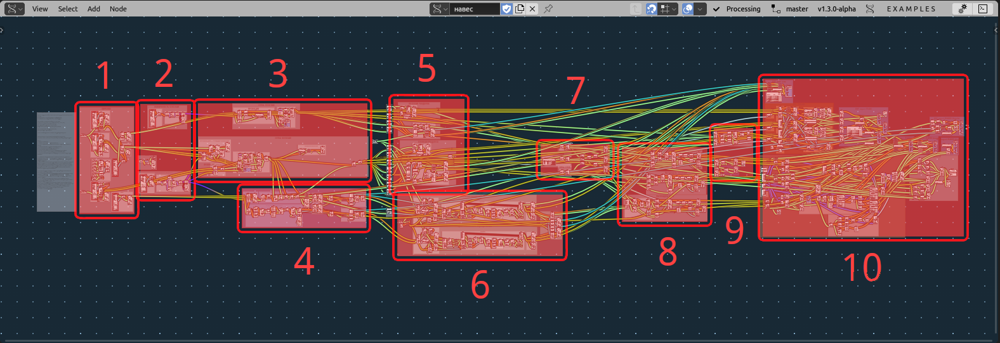
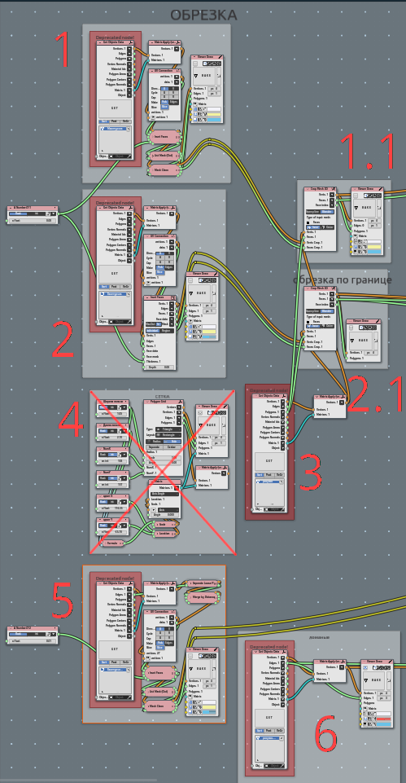
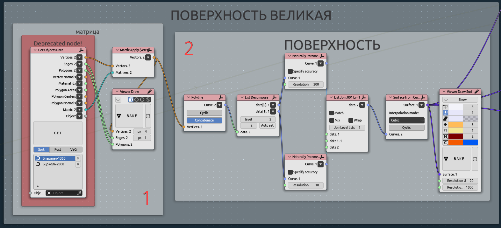
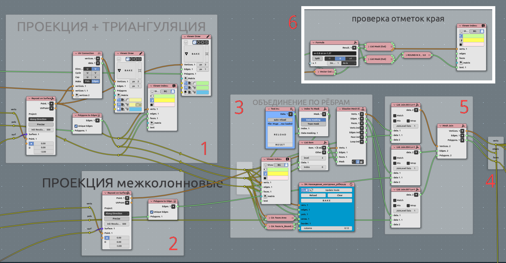
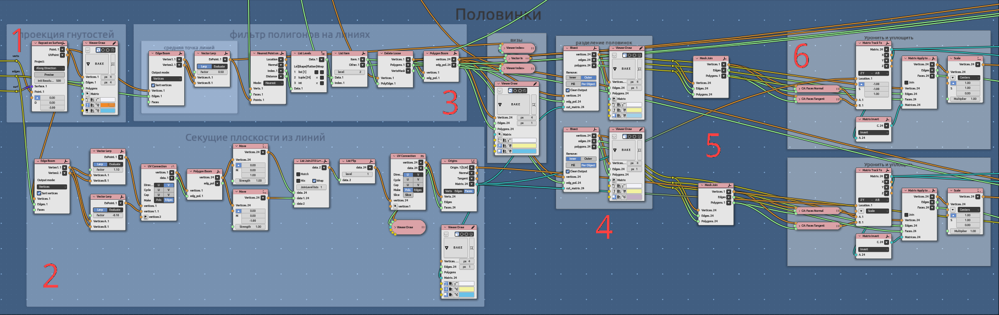
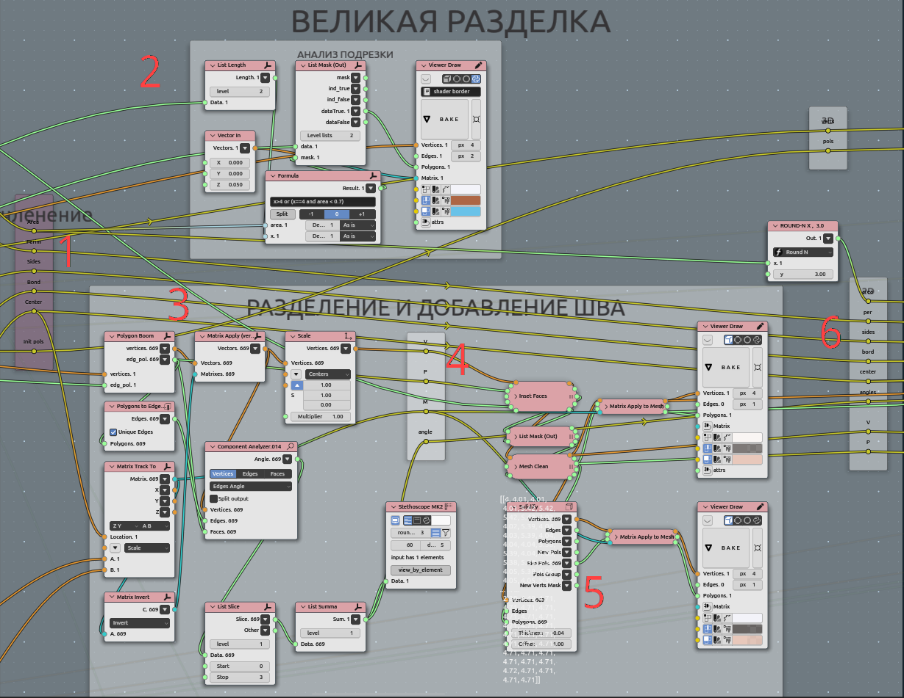

Celling 03. Flattening and offset#
Subject#
Importing initial shape (railing lines) for celling, checking of consistency
Node Tree#

Import geometry:

- ObjectGet from scene - Small area’ boundary with incet faces at 0.003 m value;
1.1. Crop mesh (3) with that boundary;
- ObjectGet from scene - Large area’ boundary with incet faces at 0.003 m value;
2.1. Crop mesh (3) with that boundary;
Getting Rhomb Pattern manually created;
Attempt to create pattern parametrically, it fails only because simplicity of initial pattern to be manual;
Separately boundary for between-columns spaces;
Lines to manually determinecorner bended plates. It is diagonal for rhomb;
Making surface:

ObjectGet from scene - lower and ipper line for surface construction$
Making surface. In some cases needed natural paramereisation.
That step convenient to be in math surface, but far there we will go mostly mesh.
Projecting pattern to surface:

Raycast on surface main area;
Raycast on surface space between columns;
Most intriguing part - MANUAL angustment. Look for third part point 4. Dissolve;
Joining all geometry to one;
Convenient to make such reroute points (NodesMenu->layout->Reroute);
Additionallychecking all vertical dimentions to match initial line. We are using manually created lines in scene to adjust that Z-values. Maybe in some cases this checkout should be after flattening stage.
Separating bended corner plates:

Raycast pattern on surface corner area (edges);
Section matrices to separate left and right plate sides;
Select corner faces (not edges);
Bisect and separate left and right sides;
Join mesh;
Drop and flatten left and right sides separately;
Flattening every plate:
Analytic outputs. There is row of analysis component node. There are area, perimeters, Nsides, IsBondary, Centers, Angles. All that going to 7 step, tipisation;
Visual checking for cutting parts. There is color highlighting for ngons;
Explode (boom node) polygons, dropping them on floor with inverted coplanar matrix for each plane, scale Z to zero (flattening itself);
Insetting gap between plates. So it appears line, compensating diferent deviations concerning flattening;
Also adding borders with extrude outer edges;
collecting rerotes for data on that step.
Sew corner splitted plates:
Demonstrating from one side:

Every plate merged by distance to be sure it consistent and sorted to manipulate after bisect disorder;
Mask formula. For every edge find out thouse of edges, are vertically oriented. That edges are bend edges, that needed to be joined when sewing left and right;
Loop for every plate. Input to that loop original “triangle” and inseted (gap between plates);
Tipisation of plates:
Drop plates to layout:
Testing and gathering:
Output: